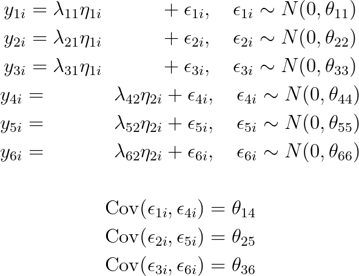
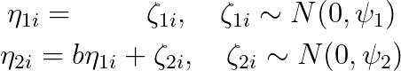
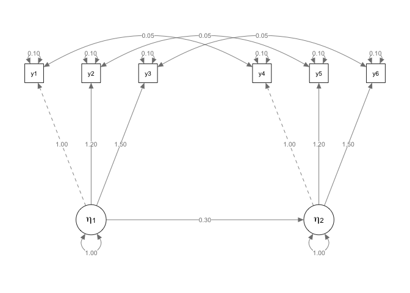
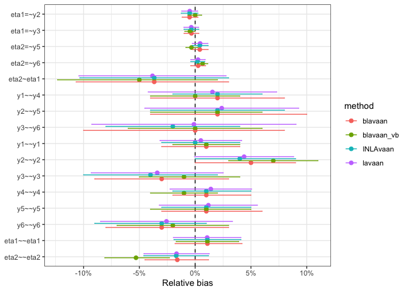
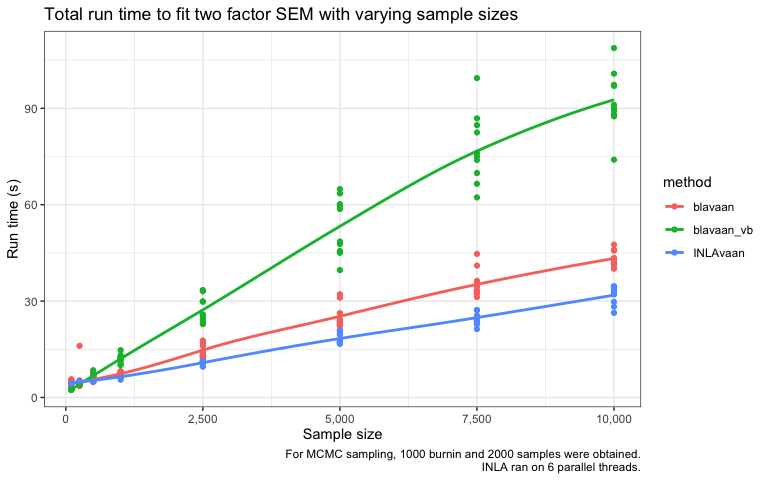
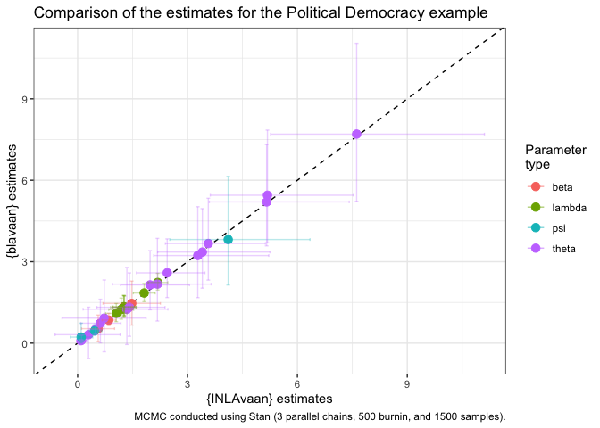

Installation
You need a working installation of INLA. Following the official instructions given here, run this command in R:
install.packages(
"INLA",
repos = c(getOption("repos"),
INLA = "https://inla.r-inla-download.org/R/stable"),
dep = TRUE
)Then, you can install the development version of INLAvaan from GitHub with:
# install.packages("pak")
pak::pak("haziqj/INLAvaan")First impressions
A simple two-factor SEM with six observed, correlated Gaussian variables. Let index the subjects. Conditional on the values of -th latent variable for subject , the six measurement model equations are

For identifiability, we set . The structural part of the model are given by these equations:

Graphically, we can plot the following path diagram.

# {lavaan} textual model
mod <- "
# Measurement model
eta1 =~ y1 + y2 + y3
eta2 =~ y4 + y5 + y6
# Factor regression
eta2 ~ eta1
# Covariances
y1 ~~ y4
y2 ~~ y5
y3 ~~ y6
"
# Data set
dplyr::glimpse(dat)
#> Rows: 10,000
#> Columns: 6
#> $ y1 <dbl> -0.16403280, 0.84666165, -0.75187977, -0.23349984, -1.10872063, 0.0…
#> $ y2 <dbl> -0.64413960, -0.17169049, 0.08213562, -0.90485687, -2.04156900, 0.1…
#> $ y3 <dbl> 0.858094700, 0.006330417, -1.026780681, -0.613721047, -2.157229417,…
#> $ y4 <dbl> 0.48799221, -0.53041248, 1.81160243, -0.67852846, 0.01154559, -0.16…
#> $ y5 <dbl> 0.009933007, -1.575633176, 1.948946179, -1.701868598, -0.503675724,…
#> $ y6 <dbl> 0.12796084, -1.79257187, 1.95968390, -0.90338971, -0.23092387, 0.01…To fit this model using INLAvaan, use the familiar lavaan syntax. The in in insem stands for INLA (following the convention of bsem for blavaan).
#> INLAvaan 0.1.0.9013 ended normally after 16 seconds
#>
#> Estimator BAYES
#> Optimization method INLA
#> Number of model parameters 16
#>
#> Number of observations 10000
#>
#> Statistic MargLogLik PPP
#> Value -51947.572 NA
#>
#> Parameter Estimates:
#>
#>
#> Latent Variables:
#> Estimate Post.SD pi.lower pi.upper Prior
#> eta1 =~
#> y1 1.000
#> y2 1.194 0.004 1.185 1.203 normal(0,10)
#> y3 1.495 0.005 1.485 1.505 normal(0,10)
#> eta2 =~
#> y4 1.000
#> y5 1.205 0.004 1.197 1.214 normal(0,10)
#> y6 1.503 0.005 1.494 1.513 normal(0,10)
#>
#> Regressions:
#> Estimate Post.SD pi.lower pi.upper Prior
#> eta2 ~
#> eta1 0.289 0.010 0.269 0.309 normal(0,10)
#>
#> Covariances:
#> Estimate Post.SD pi.lower pi.upper Prior
#> .y1 ~~
#> .y4 0.051 0.001 0.049 0.053 beta(1,1)
#> .y2 ~~
#> .y5 0.051 0.001 0.048 0.054 beta(1,1)
#> .y3 ~~
#> .y6 0.049 0.002 0.046 0.052 beta(1,1)
#>
#> Variances:
#> Estimate Post.SD pi.lower pi.upper Prior
#> .y1 0.100 0.002 0.097 0.104 gamma(1,.5)[sd]
#> .y2 0.104 0.002 0.100 0.109 gamma(1,.5)[sd]
#> .y3 0.096 0.003 0.090 0.102 gamma(1,.5)[sd]
#> .y4 0.101 0.002 0.098 0.105 gamma(1,.5)[sd]
#> .y5 0.101 0.002 0.097 0.105 gamma(1,.5)[sd]
#> .y6 0.097 0.003 0.091 0.101 gamma(1,.5)[sd]
#> eta1 1.011 0.015 0.981 1.041 gamma(1,.5)[sd]
#> .eta2 0.983 0.015 0.954 1.012 gamma(1,.5)[sd]Compare model fit to lavaan and blavaan (MCMC sampling using Stan on a single thread obtaining 1000 burnin and 2000 samples, as well as variational Bayes):

#>
#> ── Compare timing (seconds) ──
#>
#> INLAvaan lavaan blavaan blavaan_vb
#> 16.382 0.024 110.517 69.682A little experiment to see how sample size affects run time:

Political democracy data
The quintessential example for SEM is this model from Bollen (1989) to fit a political democracy data set. Eleven observed variables are hypothesized to arise from three latent variables. This set includes data from 75 developing countries each assessed on four measures of democracy measured twice (1960 and 1965), and three measures of industrialization measured once (1960). The eleven observed variables are:
-
y1: Freedom of the press, 1960 -
y2: Freedom of political opposition, 1960 -
y3: Fairness of elections, 1960 -
y4: Effectiveness of elected legislature, 1960 -
y5: Freedom of the press, 1965 -
y6: Freedom of political opposition, 1965 -
y7: Fairness of elections, 1965 -
y8: Effectiveness of elected legislature, 1965 -
y9: GNP per capita, 1960 -
y10: Energy consumption per capita, 1960 -
y11: Percentage of labor force in industry, 1960
Variables y1-y4 and y5-y8 are typically used as indicators of the latent trait of “political democracy” in 1960 and 1965 respectively, whereas y9-y11 are used as indicators of industrialization (1960). It is theorised that industrialisation influences political democracy, and that political democracy in 1960 influences political democracy in 1965. Since the items measure the same latent trait at two time points, there is an assumption that the residuals of these items will be correlated with each other. The model is depicted in the figure below.

The corresponding model in lavaan syntax is:
mod <- "
# latent variables
dem60 =~ y1 + y2 + y3 + y4
dem65 =~ y5 + y6 + y7 + y8
ind60 =~ x1 + x2 + x3
# latent regressions
dem60 ~ ind60
dem65 ~ ind60 + dem60
# residual covariances
y1 ~~ y5
y2 ~~ y4 + y6
y3 ~~ y7
y4 ~~ y8
y6 ~~ y8
"We will fit this model using INLAvaan and compare the results with blavaan.
data("PoliticalDemocracy", package = "lavaan")
poldemfit <- insem(model = mod, data = PoliticalDemocracy)
summary(poldemfit)#> INLAvaan 0.1.0.9013 ended normally after 7 seconds
#>
#> Estimator BAYES
#> Optimization method INLA
#> Number of model parameters 31
#>
#> Number of observations 75
#>
#> Statistic MargLogLik PPP
#> Value -1607.393 NA
#>
#> Parameter Estimates:
#>
#>
#> Latent Variables:
#> Estimate Post.SD pi.lower pi.upper Prior
#> dem60 =~
#> y1 1.000
#> y2 1.257 0.184 0.896 1.621 normal(0,10)
#> y3 1.055 0.148 0.765 1.348 normal(0,10)
#> y4 1.262 0.150 0.967 1.556 normal(0,10)
#> dem65 =~
#> y5 1.000
#> y6 1.189 0.173 0.849 1.529 normal(0,10)
#> y7 1.279 0.162 0.961 1.599 normal(0,10)
#> y8 1.268 0.165 0.943 1.592 normal(0,10)
#> ind60 =~
#> x1 1.000
#> x2 2.185 0.137 1.923 2.463 normal(0,10)
#> x3 1.816 0.152 1.520 2.117 normal(0,10)
#>
#> Regressions:
#> Estimate Post.SD pi.lower pi.upper Prior
#> dem60 ~
#> ind60 1.477 0.398 0.692 2.259 normal(0,10)
#> dem65 ~
#> ind60 0.561 0.229 0.108 1.009 normal(0,10)
#> dem60 0.849 0.097 0.665 1.045 normal(0,10)
#>
#> Covariances:
#> Estimate Post.SD pi.lower pi.upper Prior
#> .y1 ~~
#> .y5 0.621 0.307 0.087 1.181 beta(1,1)
#> .y2 ~~
#> .y4 1.344 0.600 0.149 2.465 beta(1,1)
#> .y6 2.178 0.682 0.950 3.644 beta(1,1)
#> .y3 ~~
#> .y7 0.726 0.560 -0.426 1.868 beta(1,1)
#> .y4 ~~
#> .y8 0.297 0.480 -0.616 1.161 beta(1,1)
#> .y6 ~~
#> .y8 1.412 0.510 0.525 2.386 beta(1,1)
#>
#> Variances:
#> Estimate Post.SD pi.lower pi.upper Prior
#> .y1 1.978 0.479 1.172 3.055 gamma(1,.5)[sd]
#> .y2 7.617 1.419 5.268 11.106 gamma(1,.5)[sd]
#> .y3 5.182 0.991 3.622 7.533 gamma(1,.5)[sd]
#> .y4 3.280 0.831 2.078 5.218 gamma(1,.5)[sd]
#> .y5 2.445 0.529 1.605 3.474 gamma(1,.5)[sd]
#> .y6 5.160 1.004 3.595 7.415 gamma(1,.5)[sd]
#> .y7 3.568 0.745 2.395 5.126 gamma(1,.5)[sd]
#> .y8 3.405 0.785 2.186 5.250 gamma(1,.5)[sd]
#> .x1 0.089 0.024 0.051 0.149 gamma(1,.5)[sd]
#> .x2 0.108 0.061 0.028 0.273 gamma(1,.5)[sd]
#> .x3 0.487 0.088 0.329 0.665 gamma(1,.5)[sd]
#> .dem60 4.110 0.980 2.514 6.344 gamma(1,.5)[sd]
#> .dem65 0.096 0.183 -0.200 0.413 gamma(1,.5)[sd]
#> ind60 0.463 0.090 0.311 0.663 gamma(1,.5)[sd]
Citation
To cite package INLAvaan in publications use:
Jamil, H (2025). INLAvaan: Bayesian structural equation modelling with INLA . https://haziqj.github.io/inlavaan/.
A BibTeX entry for LaTeX users is:
License
The INLAvaan package is licensed under the GPL-3.
INLAvaan: Bayesian structural equation modelling with INLA
Copyright (C) 2025- Haziq Jamil
This program is free software: you can redistribute it and/or modify
it under the terms of the GNU General Public License as published by
the Free Software Foundation, either version 3 of the License, or
(at your option) any later version.
This program is distributed in the hope that it will be useful,
but WITHOUT ANY WARRANTY; without even the implied warranty of
MERCHANTABILITY or FITNESS FOR A PARTICULAR PURPOSE. See the
GNU General Public License for more details.
You should have received a copy of the GNU General Public License
along with this program. If not, see <http://www.gnu.org/licenses/>.By using this package, you agree to comply with both licenses: the GPL-3 license for the software and the CC BY 4.0 license for the data.
Outro
sessioninfo::session_info(info = "all")
#> Warning in grDevices::grSoftVersion(): unable to load shared object '/Library/Frameworks/R.framework/Resources/modules//R_X11.so':
#> dlopen(/Library/Frameworks/R.framework/Resources/modules//R_X11.so, 0x0006): Library not loaded: /opt/X11/lib/libSM.6.dylib
#> Referenced from: <D469498A-D948-3064-86EA-DF67F05DCE0F> /Library/Frameworks/R.framework/Versions/4.5-arm64/Resources/modules/R_X11.so
#> Reason: tried: '/opt/X11/lib/libSM.6.dylib' (no such file), '/System/Volumes/Preboot/Cryptexes/OS/opt/X11/lib/libSM.6.dylib' (no such file), '/opt/X11/lib/libSM.6.dylib' (no such file), '/Library/Frameworks/R.framework/Resources/lib/libSM.6.dylib' (no such file), '/Library/Java/JavaVirtualMachines/jdk-11.0.18+10/Contents/Home/lib/server/libSM.6.dylib' (no such file)
#> Warning in cairoVersion(): unable to load shared object '/Library/Frameworks/R.framework/Resources/library/grDevices/libs//cairo.so':
#> dlopen(/Library/Frameworks/R.framework/Resources/library/grDevices/libs//cairo.so, 0x0006): Library not loaded: /opt/X11/lib/libXrender.1.dylib
#> Referenced from: <8BEC12F7-999D-3BC3-8F3A-2F9F34808E56> /Library/Frameworks/R.framework/Versions/4.5-arm64/Resources/library/grDevices/libs/cairo.so
#> Reason: tried: '/opt/X11/lib/libXrender.1.dylib' (no such file), '/System/Volumes/Preboot/Cryptexes/OS/opt/X11/lib/libXrender.1.dylib' (no such file), '/opt/X11/lib/libXrender.1.dylib' (no such file), '/Library/Frameworks/R.framework/Resources/lib/libXrender.1.dylib' (no such file), '/Library/Java/JavaVirtualMachines/jdk-11.0.18+10/Contents/Home/lib/server/libXrender.1.dylib' (no such file)
#> tcltk DLL is linked to '/opt/X11/lib/libX11.6.dylib'
#> ─ Session info ───────────────────────────────────────────────────────────────
#> setting value
#> version R version 4.5.1 (2025-06-13)
#> os macOS Sequoia 15.6.1
#> system aarch64, darwin20
#> ui X11
#> language (EN)
#> collate en_US.UTF-8
#> ctype en_US.UTF-8
#> tz Asia/Riyadh
#> date 2025-09-07
#> pandoc 3.4 @ /Applications/RStudio.app/Contents/Resources/app/quarto/bin/tools/aarch64/ (via rmarkdown)
#> quarto 1.7.33 @ /usr/local/bin/quarto
#>
#> ─ Packages ───────────────────────────────────────────────────────────────────
#> package * version date (UTC) lib source
#> abind 1.4-8 2024-09-12 [1] CRAN (R 4.5.0)
#> arm 1.14-4 2024-04-01 [1] CRAN (R 4.5.0)
#> backports 1.5.0 2024-05-23 [1] CRAN (R 4.5.0)
#> base64enc 0.1-3 2015-07-28 [1] CRAN (R 4.5.0)
#> bayesplot 1.14.0 2025-08-31 [1] CRAN (R 4.5.0)
#> blavaan * 0.5-8 2025-01-08 [1] CRAN (R 4.5.0)
#> boot 1.3-31 2024-08-28 [1] CRAN (R 4.5.1)
#> carData 3.0-5 2022-01-06 [1] CRAN (R 4.5.0)
#> checkmate 2.3.3 2025-08-18 [1] CRAN (R 4.5.0)
#> class 7.3-23 2025-01-01 [1] CRAN (R 4.5.1)
#> classInt 0.4-11 2025-01-08 [1] CRAN (R 4.5.0)
#> cli 3.6.5 2025-04-23 [1] CRAN (R 4.5.0)
#> clue 0.3-66 2024-11-13 [1] CRAN (R 4.5.0)
#> cluster 2.1.8.1 2025-03-12 [1] CRAN (R 4.5.1)
#> coda 0.19-4.1 2024-01-31 [1] CRAN (R 4.5.0)
#> codetools 0.2-20 2024-03-31 [1] CRAN (R 4.5.1)
#> colorspace 2.1-1 2024-07-26 [1] CRAN (R 4.5.0)
#> CompQuadForm 1.4.4 2025-07-13 [1] CRAN (R 4.5.0)
#> corpcor 1.6.10 2021-09-16 [1] CRAN (R 4.5.0)
#> curl 7.0.0 2025-08-19 [1] CRAN (R 4.5.0)
#> data.table 1.17.8 2025-07-10 [1] CRAN (R 4.5.0)
#> DBI 1.2.3 2024-06-02 [1] CRAN (R 4.5.0)
#> Deriv 4.2.0 2025-06-20 [1] CRAN (R 4.5.0)
#> digest 0.6.37 2024-08-19 [1] CRAN (R 4.5.0)
#> dplyr * 1.1.4 2023-11-17 [1] CRAN (R 4.5.0)
#> e1071 1.7-16 2024-09-16 [1] CRAN (R 4.5.0)
#> evaluate 1.0.4 2025-06-18 [1] CRAN (R 4.5.0)
#> farver 2.1.2 2024-05-13 [1] CRAN (R 4.5.0)
#> fastmap 1.2.0 2024-05-15 [1] CRAN (R 4.5.0)
#> fBasics 4041.97 2024-08-19 [1] CRAN (R 4.5.0)
#> fdrtool 1.2.18 2024-08-20 [1] CRAN (R 4.5.0)
#> fmesher 0.5.0 2025-07-07 [1] CRAN (R 4.5.0)
#> forcats * 1.0.0 2023-01-29 [1] CRAN (R 4.5.0)
#> foreign 0.8-90 2025-03-31 [1] CRAN (R 4.5.1)
#> Formula 1.2-5 2023-02-24 [1] CRAN (R 4.5.0)
#> future * 1.67.0 2025-07-29 [1] CRAN (R 4.5.0)
#> future.apply 1.20.0 2025-06-06 [1] CRAN (R 4.5.0)
#> generics 0.1.4 2025-05-09 [1] CRAN (R 4.5.0)
#> ggplot2 * 3.5.2 2025-04-09 [1] CRAN (R 4.5.0)
#> glasso 1.11 2019-10-01 [1] CRAN (R 4.5.0)
#> globals 0.18.0 2025-05-08 [1] CRAN (R 4.5.0)
#> glue 1.8.0 2024-09-30 [1] CRAN (R 4.5.0)
#> gridExtra 2.3 2017-09-09 [1] CRAN (R 4.5.0)
#> gt 1.0.0 2025-04-05 [1] CRAN (R 4.5.0)
#> gtable 0.3.6 2024-10-25 [1] CRAN (R 4.5.0)
#> gtools 3.9.5 2023-11-20 [1] CRAN (R 4.5.0)
#> Hmisc 5.2-3 2025-03-16 [1] CRAN (R 4.5.0)
#> hms 1.1.3 2023-03-21 [1] CRAN (R 4.5.0)
#> htmlTable 2.4.3 2024-07-21 [1] CRAN (R 4.5.0)
#> htmltools 0.5.8.1 2024-04-04 [1] CRAN (R 4.5.0)
#> htmlwidgets 1.6.4 2023-12-06 [1] CRAN (R 4.5.0)
#> igraph 2.1.4 2025-01-23 [1] CRAN (R 4.5.0)
#> INLA 25.06.07 2025-06-11 [1] local
#> INLAvaan * 0.1.0.9013 2025-09-07 [1] local
#> inline 0.3.21 2025-01-09 [1] CRAN (R 4.5.0)
#> jpeg 0.1-11 2025-03-21 [1] CRAN (R 4.5.0)
#> jsonlite 2.0.0 2025-03-27 [1] CRAN (R 4.5.0)
#> KernSmooth 2.23-26 2025-01-01 [1] CRAN (R 4.5.1)
#> knitr 1.50 2025-03-16 [1] CRAN (R 4.5.0)
#> kutils 1.73 2023-09-17 [1] CRAN (R 4.5.0)
#> labeling 0.4.3 2023-08-29 [1] CRAN (R 4.5.0)
#> lattice 0.22-7 2025-04-02 [1] CRAN (R 4.5.1)
#> lavaan * 0.6-19 2024-09-26 [1] CRAN (R 4.5.0)
#> lifecycle 1.0.4 2023-11-07 [1] CRAN (R 4.5.0)
#> lisrelToR 0.3 2024-02-07 [1] CRAN (R 4.5.0)
#> listenv 0.9.1 2024-01-29 [1] CRAN (R 4.5.0)
#> lme4 1.1-37 2025-03-26 [1] CRAN (R 4.5.0)
#> loo 2.8.0 2024-07-03 [1] CRAN (R 4.5.0)
#> lubridate * 1.9.4 2024-12-08 [1] CRAN (R 4.5.0)
#> magrittr 2.0.3 2022-03-30 [1] CRAN (R 4.5.0)
#> MASS 7.3-65 2025-02-28 [1] CRAN (R 4.5.1)
#> Matrix 1.7-3 2025-03-11 [1] CRAN (R 4.5.1)
#> MatrixModels 0.5-4 2025-03-26 [1] CRAN (R 4.5.0)
#> matrixStats 1.5.0 2025-01-07 [1] CRAN (R 4.5.0)
#> mgcv 1.9-3 2025-04-04 [1] CRAN (R 4.5.1)
#> mi 1.2 2025-09-02 [1] CRAN (R 4.5.0)
#> minqa 1.2.8 2024-08-17 [1] CRAN (R 4.5.0)
#> mnormt 2.1.1 2022-09-26 [1] CRAN (R 4.5.0)
#> modeest 2.4.0 2019-11-18 [1] CRAN (R 4.5.0)
#> mvtnorm 1.3-3 2025-01-10 [1] CRAN (R 4.5.0)
#> nlme 3.1-168 2025-03-31 [1] CRAN (R 4.5.1)
#> nloptr 2.2.1 2025-03-17 [1] CRAN (R 4.5.0)
#> nnet 7.3-20 2025-01-01 [1] CRAN (R 4.5.1)
#> nonnest2 0.5-8 2024-08-28 [1] CRAN (R 4.5.0)
#> OpenMx 2.22.9 2025-08-20 [1] CRAN (R 4.5.0)
#> openxlsx 4.2.8 2025-01-25 [1] CRAN (R 4.5.0)
#> parallelly 1.45.1 2025-07-24 [1] CRAN (R 4.5.0)
#> pbapply 1.7-4 2025-07-20 [1] CRAN (R 4.5.0)
#> pbivnorm 0.6.0 2015-01-23 [1] CRAN (R 4.5.0)
#> pillar 1.11.0 2025-07-04 [1] CRAN (R 4.5.0)
#> pkgbuild 1.4.8 2025-05-26 [1] CRAN (R 4.5.0)
#> pkgconfig 2.0.3 2019-09-22 [1] CRAN (R 4.5.0)
#> plyr 1.8.9 2023-10-02 [1] CRAN (R 4.5.0)
#> png 0.1-8 2022-11-29 [1] CRAN (R 4.5.0)
#> proxy 0.4-27 2022-06-09 [1] CRAN (R 4.5.0)
#> psych 2.5.6 2025-06-23 [1] CRAN (R 4.5.0)
#> purrr * 1.1.0 2025-07-10 [1] CRAN (R 4.5.0)
#> qgraph 1.9.8 2023-11-03 [1] CRAN (R 4.5.0)
#> quadprog 1.5-8 2019-11-20 [1] CRAN (R 4.5.0)
#> QuickJSR 1.8.0 2025-06-09 [1] CRAN (R 4.5.0)
#> R6 2.6.1 2025-02-15 [1] CRAN (R 4.5.0)
#> rbibutils 2.3 2024-10-04 [1] CRAN (R 4.5.0)
#> RColorBrewer 1.1-3 2022-04-03 [1] CRAN (R 4.5.0)
#> Rcpp * 1.1.0 2025-07-02 [1] CRAN (R 4.5.0)
#> RcppParallel 5.1.11-1 2025-08-27 [1] CRAN (R 4.5.0)
#> Rdpack 2.6.4 2025-04-09 [1] CRAN (R 4.5.0)
#> readr * 2.1.5 2024-01-10 [1] CRAN (R 4.5.0)
#> reformulas 0.4.1 2025-04-30 [1] CRAN (R 4.5.0)
#> reshape2 1.4.4 2020-04-09 [1] CRAN (R 4.5.0)
#> rlang 1.1.6 2025-04-11 [1] CRAN (R 4.5.0)
#> rmarkdown 2.29 2024-11-04 [1] CRAN (R 4.5.0)
#> rmutil 1.1.10 2022-10-27 [1] CRAN (R 4.5.0)
#> rockchalk 1.8.157 2022-08-06 [1] CRAN (R 4.5.0)
#> rpart 4.1.24 2025-01-07 [1] CRAN (R 4.5.1)
#> rstan 2.32.7 2025-03-10 [1] CRAN (R 4.5.0)
#> rstantools 2.4.0 2024-01-31 [1] CRAN (R 4.5.0)
#> rstudioapi 0.17.1 2024-10-22 [1] CRAN (R 4.5.0)
#> runjags 2.2.2-5 2025-04-09 [1] CRAN (R 4.5.0)
#> sandwich 3.1-1 2024-09-15 [1] CRAN (R 4.5.0)
#> scales 1.4.0 2025-04-24 [1] CRAN (R 4.5.0)
#> sem 3.1-16 2024-08-28 [1] CRAN (R 4.5.0)
#> semPlot * 1.1.7 2025-09-01 [1] CRAN (R 4.5.0)
#> semptools * 0.3.2 2025-07-12 [1] CRAN (R 4.5.0)
#> sessioninfo 1.2.3 2025-02-05 [1] CRAN (R 4.5.0)
#> sf 1.0-21 2025-05-15 [1] CRAN (R 4.5.0)
#> spatial 7.3-18 2025-01-01 [1] CRAN (R 4.5.1)
#> stable 1.1.6 2022-03-02 [1] CRAN (R 4.5.0)
#> stabledist 0.7-2 2024-08-17 [1] CRAN (R 4.5.0)
#> StanHeaders 2.32.10 2024-07-15 [1] CRAN (R 4.5.0)
#> statip 0.2.3 2019-11-17 [1] CRAN (R 4.5.0)
#> stringi 1.8.7 2025-03-27 [1] CRAN (R 4.5.0)
#> stringr * 1.5.1 2023-11-14 [1] CRAN (R 4.5.0)
#> tibble * 3.3.0 2025-06-08 [1] CRAN (R 4.5.0)
#> tidyr * 1.3.1 2024-01-24 [1] CRAN (R 4.5.0)
#> tidyselect 1.2.1 2024-03-11 [1] CRAN (R 4.5.0)
#> tidyverse * 2.0.0 2023-02-22 [1] CRAN (R 4.5.0)
#> timechange 0.3.0 2024-01-18 [1] CRAN (R 4.5.0)
#> timeDate 4041.110 2024-09-22 [1] CRAN (R 4.5.0)
#> timeSeries 4041.111 2024-09-22 [1] CRAN (R 4.5.0)
#> tmvnsim 1.0-2 2016-12-15 [1] CRAN (R 4.5.0)
#> tzdb 0.5.0 2025-03-15 [1] CRAN (R 4.5.0)
#> units 0.8-7 2025-03-11 [1] CRAN (R 4.5.0)
#> V8 7.0.0 2025-09-01 [1] CRAN (R 4.5.0)
#> vctrs 0.6.5 2023-12-01 [1] CRAN (R 4.5.0)
#> withr 3.0.2 2024-10-28 [1] CRAN (R 4.5.0)
#> xfun 0.53 2025-08-19 [1] CRAN (R 4.5.0)
#> XML 3.99-0.19 2025-08-22 [1] CRAN (R 4.5.0)
#> xml2 1.4.0 2025-08-20 [1] CRAN (R 4.5.0)
#> xtable 1.8-4 2019-04-21 [1] CRAN (R 4.5.0)
#> yaml 2.3.10 2024-07-26 [1] CRAN (R 4.5.0)
#> zip 2.3.3 2025-05-13 [1] CRAN (R 4.5.0)
#> zoo 1.8-14 2025-04-10 [1] CRAN (R 4.5.0)
#>
#> [1] /Library/Frameworks/R.framework/Versions/4.5-arm64/Resources/library
#> * ── Packages attached to the search path.
#>
#> ─ External software ──────────────────────────────────────────────────────────
#> setting value
#> cairo
#> cairoFT
#> pango
#> png
#> jpeg
#> tiff
#> tcl
#> curl 8.7.1
#> zlib 1.2.12
#> bzlib 1.0.8, 13-Jul-2019
#> xz 5.6.3
#> deflate 1.23
#> PCRE 10.44 2024-06-07
#> ICU 76.1
#> TRE TRE 0.8.0 R_fixes (BSD)
#> iconv Apple or GNU libiconv 1.11 /Library/Frameworks/R.framework/Versions/4.5-arm64/Resources/lib/libR.dylib
#> readline 5.2
#> BLAS /Library/Frameworks/R.framework/Versions/4.5-arm64/Resources/lib/libRblas.0.dylib
#> lapack /Library/Frameworks/R.framework/Versions/4.5-arm64/Resources/lib/libRlapack.dylib
#> lapack_version 3.12.1
#>
#> ─ Python configuration ───────────────────────────────────────────────────────
#> Python is not available
#>
#> ──────────────────────────────────────────────────────────────────────────────